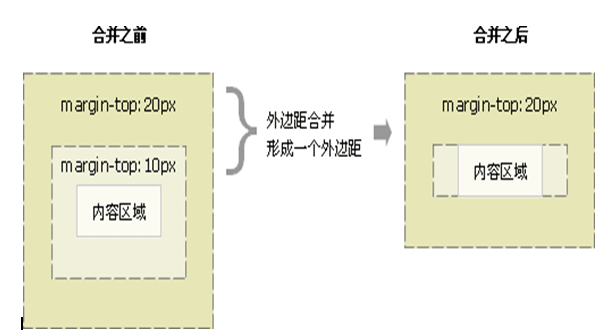

语义化标签
核心：在页面中，最合适的地方用最合适的标签 语义化的主要目的就是让大家直观的认识标签和属性的用途和作用。语义化的网页的好处，最主要的就是对搜索引擎友好，有了良好的结构和语义你的网页内容自然容易被搜索引擎抓取。
推荐：
1.重语义的地方多用有语义的标签，比如 h 和 p 等等，少用没有语义的标签比如 div span 等等。
2. 如果有地方可以用p 又可以用div， 优先选用 p标签（结构更清晰，特别是文字段落）。
3. 少用纯样式标签 比如 b u font，可以运用css样式。 如果有强调的地方，可以考虑 strong em 等 有强调语义的标签。 div 、span 标签没有任何语义
标签的显示模式及转换
html中的元素分为三种（按显示模式来分）：
块级元素
典型代表： div p h1~h6 ul li dl dt dd...
特点：
1、独占一行
2、有宽有高（设置宽高起作用）
行内元素
典型代表： span a strong b u i ....
特点：
1、可以在一行上并排多个 2、设置宽高不起作用
行内块
典型代表： img 表单元素
特点：
1、可以在一行上并排多个2、有宽有高
显示模式的转化
display 我们通过这个属性可以改变盒子原有的显示模式。
display:inline; 把标签转化为行内元素
display:block; 把标签转化为块级元素
display:inline-block； 把标签转化为行内块，转换后还是有一些默认边距，
给浮动和转换成block更彻底，没有边距，
一个标签，如果被转化成其他显示模式，则拥有该显示模式的特点。
css选择器
css选择器可以分为两大类：基础选择器和复合选择器
基础选择器又分为四种：
1、标签选择器
p{ color: red; }
通过标签名把某种标签选择出来
2、类选择器
格式： 在html 中： <标签名 class=”类名”> </标签>
在css中： .类名{ css代码; }
类名的命名规范：
1、一般情况下，类名取跟功能相关或者跟样式内容相关的英文单词或缩写。
例如： .nav .header .footer .red .blue ....
2、类名用英文，中间可以有横线、下横线、数字。不要以数字开头。
3、类名区分大小写
4、不要起与标签名一致的类名， 比如：不要 .div .p
多个类名的写法
<标签名 class=”类名1 类名2 ”></标签>
1、id选择器
格式： 在html中： <div id =”box”</div>
在css中： #box{ css代码; }
id选择器与类选择器的区别：
类选择器 好比 人的名字 （在一个页面中可以重复使用）
id选择器 好比 人的身份证 （在一个页面中只出现一次）
经验：
类选择器使用频率更多，一般 id 不用于写css样式，它一般与js配合使用。
2、通配符选择器
格式： *{ css代码; }
*号表示 任意的、全部的标签
在工作中，*号很少写在线上的网站的css代码里，即使要选到许多标签，也会把他们一个一个列出来。
*多用在测试的时候（或者做练习的时候）
字体（图标字体）相关属性
1、font-size:14px 注意单位不要丢(px)
2、font-family 字体类型的设置
注意：
1、值可以用中文，必须带引号；值是英文时可不用引号
2、font-family:值1，值2，值3；
3个值都是字体类型，浏览器会现在机器上找第一种字体类型，若找到则使用第一种字体类型，若找不到，则找第二种，再找不
到往后面找。如果都没有找到这种字体类型，则使用默认的。
3、值可以写成机器码（Unicode编码）
加粗
font-weight:bold; 让字体加粗
font-weight:normal; 让字体不加粗
font覆盖问题：
div{ width:200px; height:200px; background:pink;
line-height: 200px; font:14px "宋体"; }
/**把这个line-height放在前面会被后面的font的全写给覆盖掉，因为后面不写默认是font：14px/0 “宋体”**/
4、倾斜
font-style:italic ; 让字体倾斜
font-style:normal; 让字体不倾斜
font的合写
font: font-style font-weight font-size/line-height font-family;
注意：
1、请按这个顺序来写
2、有些属性可以省略不写，但是一定要有的属性是： font-size 和 font-family
图标字体的本质就是字体。font-family:”字体类型的名称”;通过这个属性来控制使用那一套字体。
1、得到字体（来源）
www.iconfont.cn 国内
www.icomoon.io 国外
2、在html中引入这套字体
@font-face { font-family: 'xiaozhi';
src: url('iconfont.eot'); /* IE9*/
src: url('iconfont.eot?#iefix') format('embedded-opentype'), /* IE6-IE8 */
url('iconfont.woff') format('woff'), /* chrome、firefox */
url('iconfont.ttf') format('truetype'), /* chrome、firefox、opera、Safari, Android, iOS 4.2+*/
url('iconfont.svg#iconfont') format('svg'); /* iOS 4.1- */
; }
引入的时候要注意路径！（字体存放的位置和html（或css）的位置关系）
font-family: 'xiaozhi';这表示给字体起的名字，必须和后面使用字体时候的font-family属性对应上。
3、使用字体
<span> >/span>
span{ font-family: 'xiaozhi'; }
css引入方式及继承性
1、内嵌式
2、行内式
< span style="font-weight:bold;">这是span标签</span > 行内式工作中（线上网站）基本不用，多用于做测试、调试
3、外链式
<link type=”text/css” rel=”stylesheet” href=”css文件的路径” />
把上面这行代码放到head标签里
这种链入方式是线上网站最常用的一种
4、导入式
在css环境里面导入一份css文件，格式如下：
@import url(css的路径);
注意：
把上面这行代码放在css书写环境里面；
且把它放在css代码最开始的位置。
关于css继承性两个需要注意的地方
1、a标签在浏览器下有默认的字体颜色，所以从它父级继承过来的字体颜色属性并不起作用，需要改变a标签的字体颜色，就要给 他本身进行设置
2、对于标题标记 h1到h6，如果需要设置其字体大小，也要对它本身进行设置，如果靠继承会有误差
复合选择器
1、标签指定式选择器
格式： 标签名.类名{ css代码; } 意思： 选择出拥有这个类名的某标签
例如： div.box{ color:red; } 表示拥有box这个类的div标签
2、后代选择器(最常用)
格式： 选择器1 选择器2{ css代码; }
空格表示 里面的所有1、标签指定式选择器
格式： 标签名.类名{ css代码; }
意思： 选择出拥有这个类名的某标签
例如： div.box{ color:red; } 表示拥有box这个类的div标签
2、后代选择器(最常用)
格式： 选择器1 选择器2{ css代码; }
空格表示 里面的所有
例如：
div p{ color:red; } div里面的所有p标签
div .st{ color:yellow; } div里面的所有有st这个类的标签
3、并集选择器（组合选择器）
格式： 选择器1,选择器2,选择器3｛ css代码 ｝
逗号表示 "和"
例如：
div,p,h1{ color:red; } 页面中所有的div、p和h1标签
关于a标签的几个伪类
伪类一般以冒号开头
：link 这是链接正常显示时候的状态
：visited 链接被访问过后的状态
：hover 鼠标经过链接时候的状态
：active 链接被点击时候的状态
lv ha love hate
以上是a标签几个状态的显示
工作中的写法：
a{ } /* 清除浏览器原有在四种状态下的样式 */
a:hover{ }
text-decoration:none; 去掉文本修饰
text-decoration:underline; 给文本添加下划线
css三大特性及初始化
1、层叠性
css层叠样式表
以上的结果，div盒子背景颜色是蓝色
就近原则（在权重一致的基础上）。
2、继承性
在元素中，有些样式不是通过自己本有的样式显示来的，而是通过父级（或者祖宗级）的标签继承过来的。
与文字相关的属性，可以通过父级标签继承过来
3、优先级（权重）
标签选择器 类选择器 id选择器 行内式 ！important
1 10 100 1000 max
注意：
1、权重可以叠加；
2、继承过来的属性权重为0；
css初始化
css初始化，又叫 css reset。它的目的就是为了让页面在各个浏览器下显示一致。
textarea { resize:none; } /* 让文本域不可调节大小 */
新属性：
三种常见鼠标指针状态：cursor：pointer；cursor：help；cursor：progress
css 初始化代码
/**css初始化**/
@charset "UTF-8";
body, h1, h2, h3, h4, h5, h6, hr, p, blockquote, dl, dt, dd, ul, ol, li, pre, form, fieldset, legend, button, input,
textarea, th, td,menu{ margin:0; padding:0; }
table { border-collapse:collapse; border-spacing:0; }
h1, h2, h3, h4, h5, h6{ font-size:12px; font-weight:normal; }
ul,ol{ list-style: none; }
img{ display: block; border:0 none; }
input { font-family: "SimSun","宋体"; border:0 none; outline-style:none; }
textarea { resize:none; }
.clearfix:after{ content:''; height:0; line-height:0; visibility:hidden; display:block; clear:both; }
.clearfix{ zoom:1; } /*针对ie低级版本的浏览器*/
body { font-size:12px; font-family:"微软雅黑"; } /*正文的字体大小和颜色*/
背景属性（opacity、rgba）
背景占位吗？ 背景不占位（它不属于盒子的内容区域）
常写： background: 背景颜色 背景图片 是否平铺background:#fcf url(... ) repeat/no-repeat/repeat-x/repeat-y；
背景位置：
background-position: 值1 值2；
值1和值2都可以是数字加单位px
；分别代表背景图片在水平和垂直方向的偏移量。
值1和值2还可以是方向词：
top/bottom/left/right分别表示背景图片紧贴着盒子的上/下/左/右边缘
center表示居中
背景完整写法：
background : 背景颜色 图片路径 是否平铺 背景位置 背景是否固定;
清除ul li 默认样式
ul{ list-style:none; }
背景属性可以分写：
background-color:red; 单独设置背景颜色
background-image:url(图片路径); 单独设置背景图片
background-repeat: repeat/no-repeat/repeat-x/repeat-y;
background-position:值1 值2；
background-attachment:scroll/fixed; scroll（默认情况下就是scroll），fixed（设置背景固定）
opacity:0.5; 数值没有单位,值在1的范围内0.1~1，这个会除了盒子外其内容也会变透明
背景透明：
background:rgba(0,0,0,0.5);
background:rgba(255,255,255,0.5);
最后一个值取值范围 0到1，表示不透明度
这种写法是css3的写法，仅背景透明，内容不受影响。（IE6\7\8不兼容这个属性）
行高、居中
行高：一行文字的高度
在页面中，文字在一行上都是自动垂直居中的！
结论：一行文字的行高如果等于盒子的高度，则文字能够在盒子里垂直居中
居中
text-align:center; 它能使盒子里面的文字、行内元素、行内块元素水平居中
magin:0 auto; 盒子的水平居中（有宽度的块级盒子、在标准流中）
盒子模型、注释
一切标签皆盒子（矩形）
边框属性：
格式（合写）： border: 边框粗细 边框样式 边框颜色；
border:2px solid/dashed/dotted red; 实线/虚线/点线
边框属性分写：
1、border-方位词(四个) 单独设置某个方向的边框
例子：border-top:2px solid #000;
2、border-边框样式 单独设置边框的某个样式
border-width：2px;
border-style:solid/dashed/dotted ;
border-color:色值；
3、border-方位词-边框样式
border-top-width: 单独设置顶部方向边框的粗细
小知识点：
1、清除表单元素在谷歌浏览器下聚焦时候的蓝色边框 input{ outline-style:none; }
2、表单元素聚焦时候的伪类（聚焦：光标出现的时候）
input:focus{ css代码; }
3、对于表单元素，去掉默认边框： input{ border:0 none; }
内边距padding
padding:10px; 单值 四个方向的内边距都是10px
padding:10px 20px; 双值 上下内边距10px 左右内边距20px
padding:10px 20px 30px; 三值 上10px 左右20px 下30px
padding:10px 20px 30px 40px; 四值 上、右、下、左 分别为 10px、20px、30px、40px
求：一个盒子内边距 上13px 下15px 左20px 右20px
padding属性分写:
padding-top 上内边距
padding-bottom下内边距
padding-left 左内边距
padding-right 右内边距
页面中，盒子的占位： width + padding(水平) + 边框（左右）
在使用padding的时候，考虑下盒子是否有宽高，注意是否需要减掉这个padding值，如果padding影响了盒子原有的占位，则应该减。
margin 外边距
margin:10px 20px;
margin的值的情况和padding一样，也有单值、双值、三值、四值
margin-top 上外边距
margin-bottom 下外边距
margin-left 左外边距
margin-right 右外边距
注释
html :
css： /* 要注释的内容 */ 注意 不可以用 //
网页中的布局
1、标准流
标准流又叫文档流， 英文： normal flow
什么标准流？
页面中元素本应该有的布局方式。
我们之前学习的内容， 全属于标准流布局（行内元素就可以在一行上排列多个，块级元素就应该要独占一行！）
标准流布局是几种布局里面结构最为稳定的布局方式。
2、浮动
3、定位
banner的圆点一般给ol做
外边距合并只出现在竖直方向，水平方向不会出现，这可以在内联元素上看得出来，你不把他转化成块级，给margin只在水平上起作用
banner背景图过小的做法：可以给background-size：100%，来给屏幕自适应
banner背景图过大，css的做法如下：
先用定位给left，方向50%，然后margin-
left给img图片宽度的负一半，在这之前要把装图片的盒子宽度给100%，也就是屏幕自适应；
因为有行高（line-height）原因，所以，想给底（bottom）或者顶（top）边框（border-top/border-bottom），可以不用像给内容左右两边背景那样用padding挤出位置来！！
浮动是解决盒子并排问题的，如果想要文字右对齐，请不要使用float：right，可以用text-align：right；因为浮动会影响下面的盒子前提是盒子要有宽高
借淘宝案例来洗新下对position定位的认识
首先相对定位（relative）是占位置的，绝对定位（absolute）是不占位的，
为什么一般说子绝父相（子元素绝对定位，父元素相对定位）因为父级一般是要占位置的，这也是一般，不是说非得子绝父相
，从淘宝案例中可以看出
子绝父绝也可以，只不过是说看你父元素占不占位问题，也就是他们可以独自的使用，不是连带关系，只不过你在定位时给
方向值，他要参照一个对象来移动
如果不给他会一直往上找，最后会找到窗口文档来定位，上面也讲了，父元素也只是个你子元素方向的参照，具体给绝对给相
对，要看你父元素占不占位，当子元素定位是
给父元素定位只是让子元素，有个参照而已！最后补充下，给普通元素定位,层级会上来，也就是如果下面的盒子跟上面的盒子
有重叠部分，上面的给了定位，就会把下面的盖了，
说到层级，后面出来的会覆盖在前面的，后来居上，可移动z-index来改变，这个是结合定位来使用的.
浮动的元素，不用display转换 给宽高会自动起作用，给a元素block和inline-block的区别就在于bolock能自适应宽高,后者不给宽高，是不会自适应盒子宽高的
如果你没有清除浮动给盒子border，这个底是会浮动上去的！
img图片可以给定高度或宽度，给其中一个值就可以只适应，背景图片不行
在做水平菜单栏时，应该给其子菜单加上绝对定位，虽然给li浮动，也可以正常的显示，并且鼠标移上不会把下面的盒子弹开
，但是如果下面的盒子也浮动，那个层级关系就后来居上的发生改变了，鼠标移上就会把盒子弹开了，
所以就用定位来保证鼠标移上子菜单不会把下面的盒子弹开。
脱离标准流，会被内容撑开.
浮动、清除浮动
浮动是专门用来解决元素在一行上排列的问题
浮动的元素是在标准流之上浮动的，它是脱离标准流的。
我们在做页面的时候，首先用标准流布局，其次才用浮动和定位。
浮动特性：
1、浮动的元素顶对齐
(同级)浮动元素可以实现并排，且顶部对齐，如果父盒子宽度不够，则盒子往下掉。
2、要么都浮，要么都不浮
同级元素，只要有一个盒子浮动，则其它都要加浮动。
3、浮动分方向
float:left; 向左浮动
float:right; 向右浮动
float:none; 不浮动
4、浮动影响盒子的显示情况
1、没有宽高的元素，如果加了浮动，则元素的实际位置跟内容一样宽
2、不管原先是块级元素还是行内元素，只要加了浮动，它就有宽高（给宽高就起作用）
margin: 10px 20px;
margin:0 auto;
清除浮动
现象：一个父盒子,如果它的子级全都浮动了，则父盒子会置空，表现为高度为0（如果父盒子给高度的话）；
清除浮动就是来解决上面这个问题的：
1、如果允许，则给父盒子加height；;别忘了清理浮动的初衷，是让下面内容自动撑满其父盒子的高，有了高是不需要清理浮动的
2、额外标签法
clear: both; (或者left/right，但是一般都是清除两边这个作为了解就好)
在这些浮动的盒子后面加上<div style="clear:both;"></div>
3、溢出隐藏法
给大盒子加上overflow:hidden这个属性；
4、伪元素清除法
：after( ：before ) 表示给盒子内部的结尾处（或者开头）添加一个行内元素。这两个伪元素都有一个不可缺少的属性 content:’’;
.clearfix:after{ content:''; height:0; line-height:0; visibility:hidden; display:block; clear:both; }
.clearfix{ zoom:1; } /* 针对IE低级版本的浏览器 */
把这段代码放在css初始化里面， 把clearfix这个类给到父盒子身上
5、双伪元素清除法
.clearfix:before,.clearfix:after{ content:''; display:table; }
.clearfix:after{ clear:both; }
.clearfix{ zoom:1; } /* 针对IE低级版本的浏览器 */
把这段代码放在css初始化里面， 把clearfix这个类给到父盒子身上
外边距合并、行内元素的边距
在做页面布局的时候，首先考虑最稳定的width和height，有边距的时候，首先考虑能够用内边距，因为外边距本身有bug，如：外边距合并
外边距合并有下面两种情况：
1、同级状态下的外边距合并
这种情况是可以避免的
2、父子级状态下的外边距合并
解决办法：
1、给大盒子用padding来做
2、给大盒子一个border-top或者border;
3、给大盒子加上 overflow:hidden;
注意：如果小盒子有浮动或者定位，则不会出现这个问题
行内元素的边距
对于行内元素，如果用到竖直方向上的内边距（或者外边距） ，要先把他们转化成行内块（或者块级），否则起不了作用。
脱离标准流的行内元素就不会有这个问题。
定位及层级关系
浮动用来解决元素并排的问题
定位是用来解决层级关系的问题
position 定位：
值： static(静态定位)、absolute(绝对定位)、relative(相对定位)、fixed(固定定位)
1、position:static
是元素默认的定位方式
通俗理解：没有定位
2、position:absolute绝对定位
绝对定位的元素脱离标准流（不占位），它经常跟方位词属性配合使用 (top/bottom/left/right)
注意：方位属性不能单独出现，他们必须配合定位（绝对、相对、固定）来使用，否则没效果。
到底以哪里来做参照：
1、没有父级的盒子绝对定位，则参照点为网页文档的左上角
2、有父级的盒子绝对定位，且父盒子（祖宗盒子）没有定位，则参照点为网页文档的左上角
3、有父级的盒子绝对定位，且父盒子有定位，则参照点为父盒子左上角
3、相对定位 position:relative
参照点是元素本身应该在的位置（左上角）
相对定位的元素没有脱离标准流，它是占位的
在工作中定位的用法
口诀： 子绝父相
在工作中，如果用到的，大部分情况下是：子级绝对定位，父级相对定位。
定位的层级
定位了的元素，它本身的层级比标准流的和浮动的元素要高。
z-index:序号(数字);
数字不带单位。
注意：
1、有了定位的元素，在没有给z-index属性的时候，后面出现的盒子层级越高，越优先被看见（几个同级盒子）
2、定位的盒子默认的 z-index值为0；
3、z-index的值设置越高，表示层级越高，越优先被看见（同级）
4、z-index可以给负值，可以给0，可以1，但是不要给小数。
5、z-index只对有定位的元素起作用
6、不同父级的盒子（都是子绝父相），不是说z-index越大层级越高，而要看他们父级的层级的比较（同级的盒子，z-index才有比较意义）
三角形用标签写法
三角形的做法：
1、背景图片法（新浪）
2、一个标签的做法（网易）
3、三个标签的做法（旧淘宝）
4、图标字体iconfont（新版淘宝）
5、css3旋转属性（手机站）
三个标签的做法：
骨架结构
< span>
< em></em >
< i> </i>
< /span>
css样式
em,i{ width:0; height:0; border-width:30px; border-style: dashed dashed dashed solid;
border-color:transparent transparent transparent red; position:absolute; left:60px; top:60px; }
i{ border-color:transparent transparent transparent #fcf; left:50px; }
一个标签的做法：
骨架结构
span{ width:200px; height:200px; background:#fcf; display:block; position:relative; }
css样式
width:0px; height:0px;/* border:1px solid #000;*/
border-width:20px;
border-style:dashed solid dashed dashed;
border-color:transparent red transparent transparent;
注意：
要考虑盒子本身是什么元素（显示模式）,如果是行内元素，考虑转化显示模式。
border-radius: 4px; 把盒子的四个角设置成圆角。
css制作做细线表格
一个表格最基础的样式：
table{ border:1px solid #000; width:800px; height:300px; border-collapse:collapse; }
td{ border:1px solid #000; }
border-collapse:collapse; 边框折叠属性。
这个属性可以使单元格和table的边框折叠在一起，显示为细线表格（1px）。
label 标记标签
<label></label> 它专门用于标记表单元素。
起到的效果：它可以让被标记的这个表单元素，在点击label的时候被聚焦（出现光标）
：
label的for属性的值，就是要标记的表单元素的id。
常见IE6的BUG处理
1、关于图片的两个问题
图片在任何浏览器下会有3像素间隙。
解决方式： display:block
图片在a标签下会有紫色边框。
解决方式： border:0 none;
2、ie6最小高度
ie6下，盒子有一个最小高度，这个值取决于字号大小。 一般给小于某个值（18px） 的高度则需要给盒子加上：
overflow:hidden; font-size:0; line-height:0; 才能兼容IE6。
标签法写三角形的时候，也写上他们可兼容IE6。
3、双倍边距BUG
出现双倍边距的条件：
1、块级盒子
2、盒子浮动了
3、在水平方向上有外边距
解决方法： _display:inline;
_表示只针对IE6来调节（其他浏览器不会有这个属性）
4、margin给负值不显示
在IE6下，给margin负值的时候，超出的部分会不显示。
解决办法： 给这个盒子加上 _position:relative;
附加DW中站点的配置及一些技巧
站点文件夹：包含了网站中所有元素的这个文件夹
新建站点：
代码片段的使用